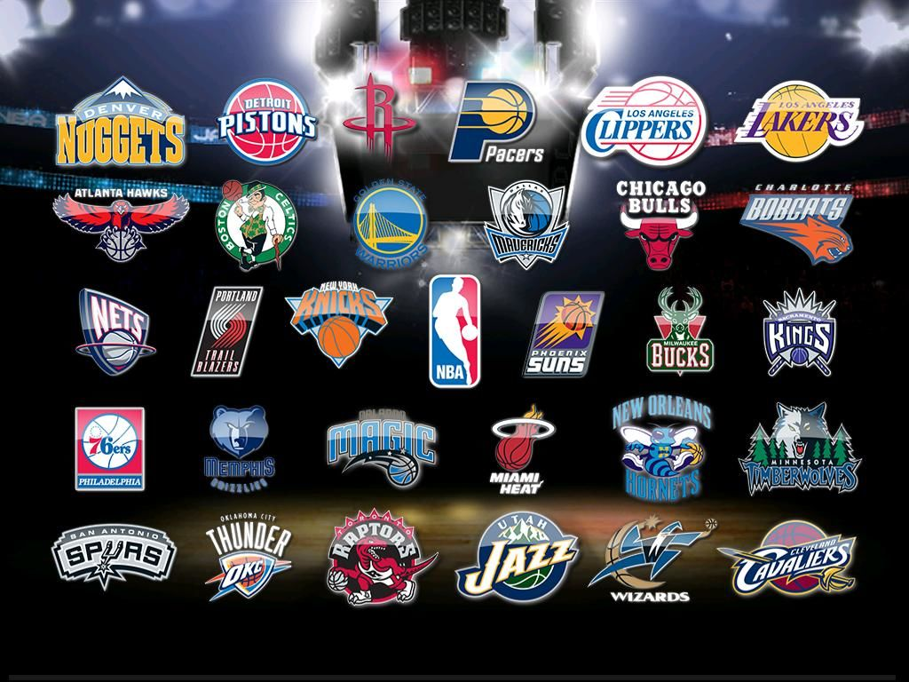

Historia
Basketball Association of America została utworzona w 1946 roku, przez właścicieli największych aren hokejowych w północno-wschodnich i środkowo-zachodnich Stanach Zjednoczonych i Kanadzie. 1 listopada 1946, w Toronto w Kanadzie, Toronto Huskies podejmowali New York Knickerbockers w Maple Leaf Gardens, w meczu, który uważany jest za pierwszy w historii NBA[4]. Chociaż istniały wtedy już American Basketball League i NBL, BAA było pierwszą profesjonalną ligą koszykarską, która zamierzała rozgrywać swoje mecze przede wszystkim w dużych miastach. Podczas pierwszych lat istnienia poziom gry w BAA nie odróżniał się od tego prezentowanego w konkurencyjnych ligach, czy niezależnych zespołach, jak Harlem Globetrotters. Na przykład, finalista ABL z 1948 roku Baltimore Bullets przenieśli się do BAA i w tym samym roku zdobyli mistrzostwo w tejże lidze, a mistrzowie NBL z 1948 roku - Minneapolis Lakers zdobyli mistrzostwo BAA w 1949 roku.

W dniu 3 sierpnia 1949 roku, władze BAA przystały na fuzję z NBL, tworząc nową ligę, o nazwie National Basketball Association[6]. Nowa liga posiadała 17 zespołów, zlokalizowanych w mieszance małych i dużych miast, i rozgrywających swoje mecze w dużych arenach, jak i miejskich gimnazjach[6]. W 1950, NBA zmniejszała się do liczby jedenastu zespołów, a proces ten trwał do sezonu 1953–54, gdy liga przybrała najmniejszy rozmiar w historii, wynoszący dziewięć drużyn. Wszystkie z nich mieściły się w dużych miastach (New York Knicks, Boston Celtics, Golden State Warriors, Los Angeles Lakers, Royals/Kings, Detroit Pistons, Atlanta Hawks, oraz Nationals/76ers). Proces zmniejszania ligi polegał na odbieraniu koncesji małym miastom i przenoszeniu ich do dużych. Hawks przeniesieni zostali do Atlanty z "Tri-Cities" (obszar znany Quad Cities), w 1951 roku do Milwaukee, a cztery lata później do St. Louis w stanie Missouri; Royals z Rochester, przez Nowy Jork do Cincinnati (w 1957); i Pistons z Fort Wayne, przez Indianę do Detroit (w 1957).
Amerykanin japońskiego pochodzenia, Wataru Misaka, podczas gry w New York Knicks w sezonie 1947/48, "złamał" barierę etniczną w NBA. Ten rok przyniósł także dołączenie pierwszych afroamerykańskich graczy przez kilka zespołów, Chucka Coopera przez Celtics, Nathaniela "Sweetwatera" Cliftona przez Knicks, i Earla Lloyda przez Washington Capitols. Podczas tego okresu, prowadzeni przez centra George'a Mikana Minneapolis Lakers, wygrali pięć mistrzostw NBA, zyskując pozycję pierwszej dynastii ligi[7]. Aby zachęcić zespoły do rzucania, i zniechęcić do długiego rozgrywania akcji, władze ligi wprowadziły w 1954 roku, zegar ograniczający budowanie akcji do 24 sekund[8]. Jeśli drużyna w tym czasie nie trafiła rzutu lub piłka nie dotknęła kosza, zegar zostawał restartowany, a piłka przekazywana drużynie przeciwnej.
Powrót na góre strony Źródło:Wikipedia